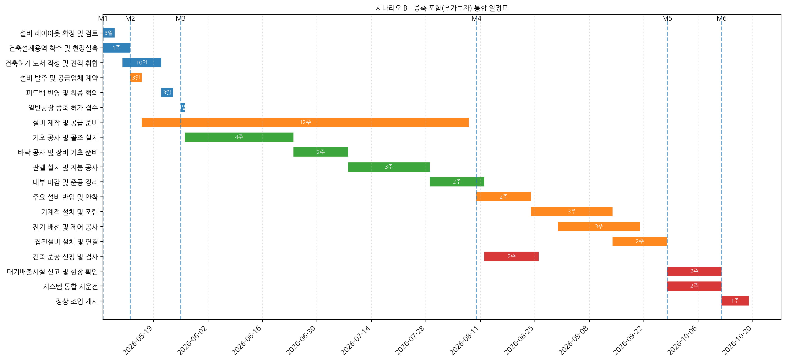
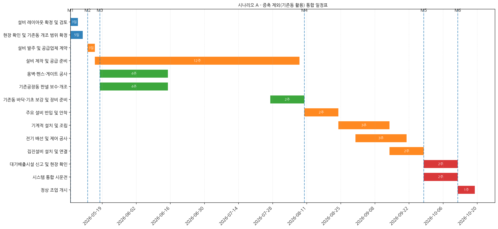

지수통합선별공장 증축안과 미증축안을 운영 안정성, 예산, 일정의 세 축에서 비교한 경영진 보고용 연구형 브리프다.
핵심은 초기 투자비보다도 원료 보관, 차량 동선, 재고 운영, 대량 출고 대응의 지속가능성을 어디에 둘 것인가에 있다.
보고일 2026-05-07프로젝트 연도 2026회사 유네코상태 검토중언어 한국어
Abstract
한눈에 보는 결론
이 문서는 하동지점 보유 원료와 PS Ball 선별·보관·출고 체계를 지수공장 중심으로 재편하는 투자안을 다룬다.
증축안은 투자 규모가 크지만 장기 운영 안정성과 확장성이 높고, 미증축안은 초기 비용이 낮지만 공간·동선·재고·우천 대응에 구조적 한계가 있다.
“증축안은 비용이 아니라 운영 체계를 바꾸는 선택이다. 초기 예산보다 이후 몇 년의 물류 안정성과 출고 효율이 더 크게 작동한다.”
문서 요약을 바탕으로 한 편집적 재구성
운영 목적: 원료 저장, 제품 재고, 차량 동선, 벌크 상차 체계를 지수공장 중심으로 재배치
의사결정 기준: 증축안의 안정성·확장성과 미증축안의 비용 절감을 비교
예산 포인트: 공통 부대공사 166.55백만원, 증축안 총액 1,044.45백만원(VAT 포함)
일정 포인트: 설계·허가·견적·설비 발주 병행 시 2026년 10월 전후 정상조업 전환 목표
Key Findings
핵심 발견
1. 증축안은 초기비용이 크지만 운영 리스크를 줄인다
원료 보관장, 야적장, 사일로·버킷엘리베이터, 버퍼탱크, 벌크 상차 구조, 차량·장비 동선까지 한 번에 재설계할 수 있어
장기적으로는 재고 관리와 출고 안정성이 우세하다.
2. 미증축안은 비용이 낮지만 확장 여력이 좁다
기존 동 중심의 활용은 당장 투자 부담이 적지만, B동 적재 한계와 야외 야적 의존, 유지보수 공간 부족이 누적되면
함수율 관리와 대량 출고 대응에서 구조적 병목이 발생한다.
3. 공통 부대공사는 분리 관리가 타당하다
보관장 바닥·옹벽, 대문·휀스, 기존 판넬 철거·보수, 기숙사 도배·장판은 증축 여부와 무관한 필수 투자로 제시돼
별도 선반영 항목으로 취급하는 편이 합리적이다.
4. 일정은 설계보다 병행 관리가 중요하다
증축안 채택 시 설계, 허가, 세부견적, 설비 제작 발주를 병행해야 하며, 세부견적 산출에는 업체 공지 이후
최소 수일에서 약 2주까지의 리드타임이 필요하다.
Evidence
근거와 수치
구분
증축안
미증축안
해석
총예산
949.5백만원(VAT 별도), 1,044.45백만원(VAT 포함)
183.205백만원(VAT 포함)
증축안은 초기 투자비가 크지만 운영 안정성에 투자하는 구조다.
운영성
원료 보관, 출고, 장비 동선 재설계에 유리
기존 공간 활용 중심, 동선 제약 존재
증축안이 대량 처리와 재고 안정성에서 우세하다.
리스크
허가·공사 기간, 설계 변경, 추가비 발생
공간 부족, 유지보수성 저하, 우천 대응 한계
위험의 종류가 다르며, 미증축안은 구조적 리스크가 더 지속적이다.
일정 전략
설계·허가·견적·설비발주 병행
기존 시설 보완 후 단계적 추진
증축안은 병행 운영을 전제로 해야 한다.
편집 메모:
공통 부대공사 166.55백만원은 증축 여부와 무관하게 진행 가능한 필수 범위로 분리해 두는 편이 예산 심의와 일정 관리 모두에 유리하다.
Schedule
일정 흐름
시나리오 B는 설계와 행정, 견적, 설비 발주를 병행하는 방식으로, 정상조업 전환 시점을 2026년 10월 전후로 잡는다.
1단계
기초자료 검토 및 증축 여부 결정
2단계
공통 부대공사 범위 확정 및 선반영
3단계
증축안 세부설계, 세부견적, 허가 협의 병행
4단계
설비 발주, 현장공사, 시운전 및 정상조업 전환
일정 해석은 문서의 시나리오 A/B 구조를 편집적으로 정리한 것이다.
Risk
리스크 레이더

시나리오 B: 증축안 기준의 통합 일정표.

시나리오 A: 미증축안 기준의 통합 일정표.
Implications
의사결정이 바꾸는 것
“이 안건은 공장 증설 여부가 아니라, 원료와 출고의 운영 철학을 어떻게 설계할 것인가의 문제다.”
증축안은 창고와 출고 동선을 한 번에 정렬할 수 있는 선택이며, 미증축안은 현장 제약을 감수하는 선택이다.
“공통 부대공사를 분리하면, 투자 판단과 실행 준비를 동시에 진행할 수 있다.”
예산을 한 덩어리로 보지 않고 필수 공통분과 선택 증축분으로 나누면 의사결정 속도와 실행 일관성이 좋아진다.
실무적 함의:
설비 예산은 별도 반영 가능성이 있으므로, 최종 투자예산은 현재 문서 수치보다 상향될 수 있다.
대기배출시설 신고, 전기, 집진, 소방 범위는 세부견적 단계에서 누락되지 않도록 범위 통제가 필요하다.
Takeaways
한 줄 결론
증축안을 택하면
단기 투자 부담은 크지만, 원료 보관과 출고, 차량 동선, 대량 벌크 처리에서 더 안정적인 구조를 얻는다.
미증축안을 택하면
초기 비용은 낮지만, 공간과 동선의 제약이 계속 누적되어 운영 안정성과 확장성에서 한계를 만난다.
Reader’s Ending
이 보고서의 본질은 단순한 증축 승인 여부가 아니다. 지수공장을 중심으로 원료, 보관, 선별, 출고의 흐름을
얼마나 안정적이고 예측 가능하게 재설계할 것인지에 대한 선택이다. 초기 투자비는 분명하지만,
운영의 병목을 줄이고 미래 확장 여지를 확보하려면 증축안이 더 강한 설득력을 가진다.